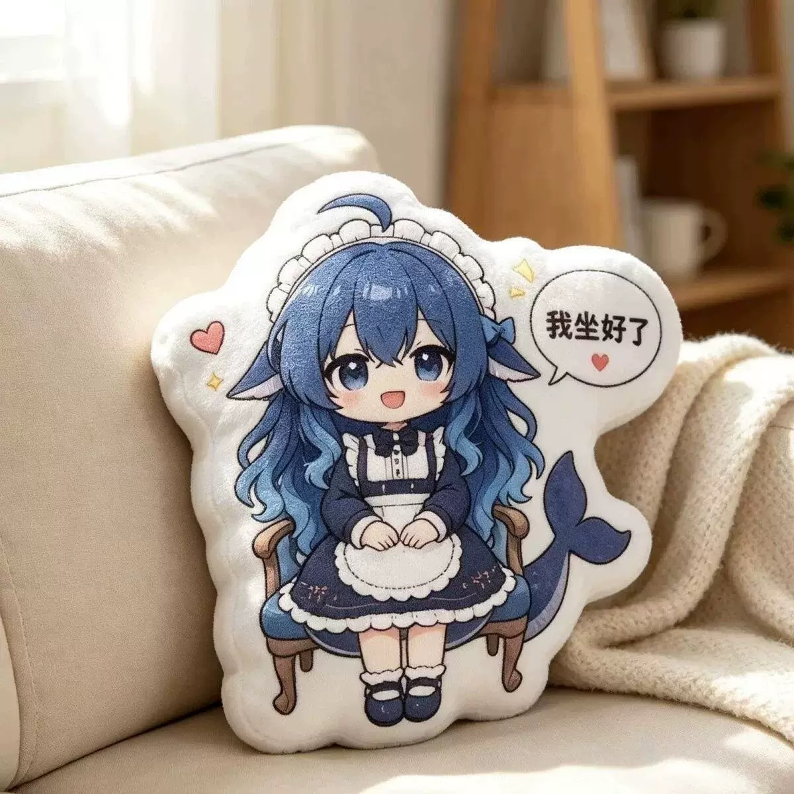

All designs / Design 05
Sitting On A Chair Edition
The seated variant: a tiny wooden chair is part of the silhouette, legs dangling, hands folded in the lap, speech bubble with a heart at the shoulder. The chair legs give the pillow a flat base so it stands upright on a shelf without a prop.
- Design05 of 14
- ShapeSquare character die-cut (~1200 px footprint)
- ColoursNavy, cream white, glacier-blue gradient hair
- FinishDye-sublimation printed plush face, soft short-pile fabric
- Photo1200 × 1200 JPEG, indoor daylight, neutral sofa / bedroom setting
- OrderingQuote on request — Telegram @DK88878
Want this design? Send the design number (05) plus your country to @DK88878 on Telegram and you'll get size options, fabric choices and a quote.
Message @DK88878 on Telegram